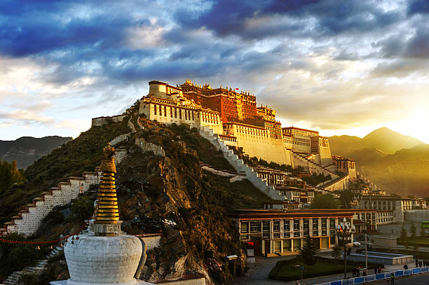
Potala Palace (Tibet)
Potala Palace is one of Tibet’s most iconic landmarks, rising majestically above the city of Lhasa. Once the winter residence of the Dalai Lamas, it serves as a symbol of Tibetan Buddhism, culture, and history. The palace is famous for its massive structure, layered architecture, ancient murals, sacred chapels, and thousands of historic artifacts.
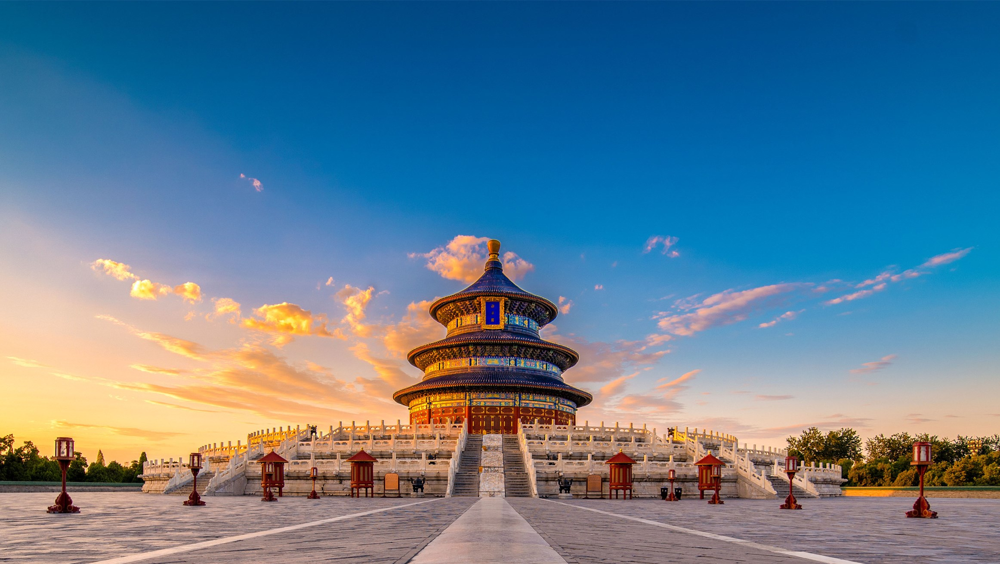
Temple of Heaven (China)
The Temple of Heaven in Beijing is one of China’s most important ceremonial sites. Built during the Ming Dynasty, it was where emperors prayed for good harvests and performed sacred rituals to honor heaven. The complex is known for its beautiful circular buildings, impressive symmetry, and symbolic design.
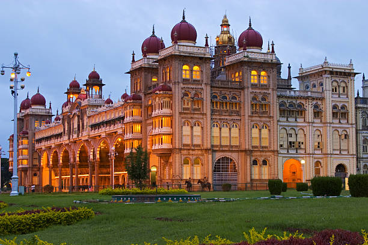
Mysore Palace (India)
Mysore Palace, located in Karnataka, is one of India’s most magnificent royal residences. Built in the Indo-Saracenic style, it is known for its grand halls, intricate carvings, and beautifully decorated interiors. At night, it glows with thousands of lights, making it one of the most stunning historical landmarks in India.
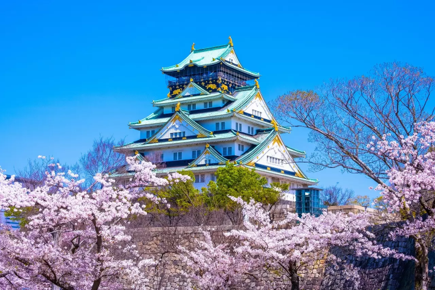
Osaka Castle
Osaka Castle is one of Japan’s most iconic historical fortresses. Built in the 16th century by Toyotomi Hideyoshi, it helped unify Japan. Its white-and-gold tower, stone walls, and scenic moats make it unforgettable. Today, it stands as a symbol of Japan’s rich samurai heritage and culture.
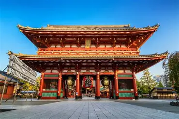
Senso-ji Temple
Senso-ji Temple, located in Tokyo’s Asakusa district, is Japan’s oldest and most visited Buddhist temple. Built in the 7th century, it is famous for its striking red gate (Kaminarimon), the bustling Nakamise market street, and its peaceful main hall dedicated to the Bodhisattva Kannon also making it one of Tokyo’s most iconic landmarks.
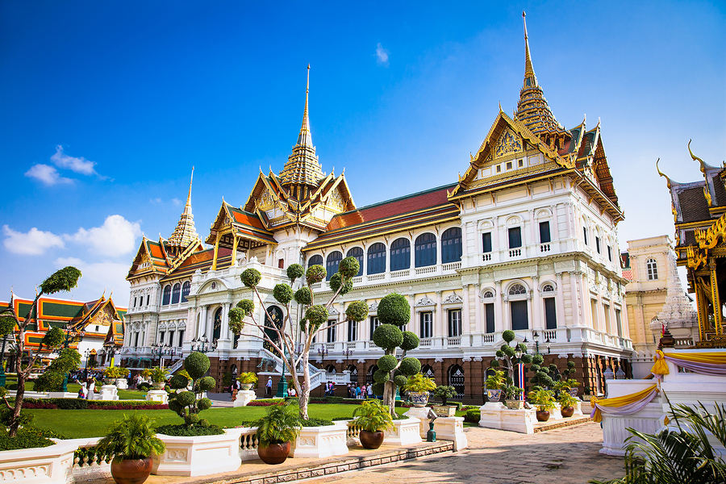
Grand Palace
The Grand Palace in Bangkok is Thailand’s most famous and majestic royal complex. Built in 1782, it served as the home of Thai kings for over 150 years. Known for its golden spires, detailed carvings, and sacred temples, it reflects the finest Thai craftsmanship. Today, it stands as a symbol of Thailand’s royal heritage and spiritual tradition.
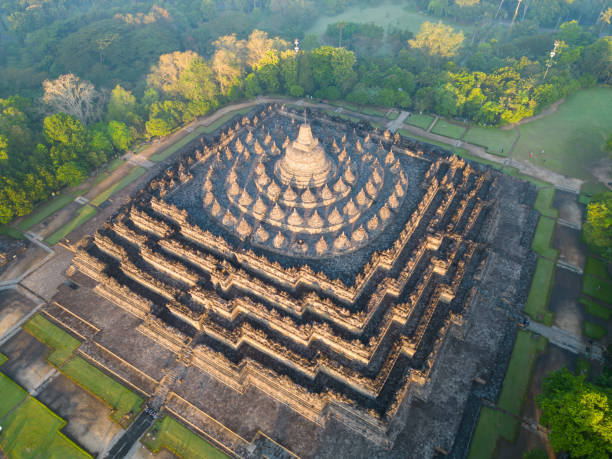
Borobudur temple
Borobudur Temple is the world’s largest Buddhist monument in Central Java. Built in the 9th century, it features a massive stone mandala design. Its walls are covered with detailed carvings and Buddha statues. Today, it stands as a UNESCO World Heritage Site and a symbol of enlightenment.
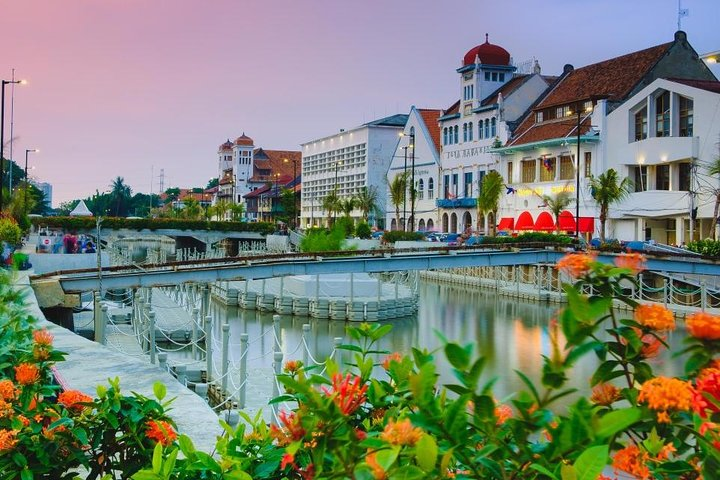
Jakarta Old Town
Jakarta Old Town, also known as Kota Tua, is the historic heart of Indonesia’s capital. It features Dutch colonial buildings, old squares, and museums that reflect Jakarta’s past. The area once served as the center of trade during the colonial era. Today, it is a cultural hub loved for its heritage, cafés, and vintage architecture.
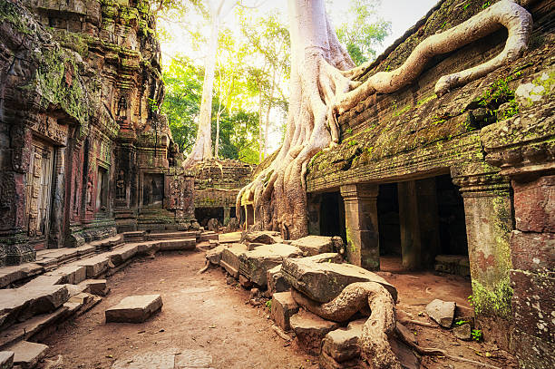
Ta Prohm
Ta Prohm is a famous temple in Angkor known for its mystical, jungle-covered ruins. Built in the 12th century, it was originally a Buddhist monastery and university. Massive tree roots grow through the stone walls, creating its iconic look. Today, it stands as one of Cambodia’s most atmospheric and photogenic heritage sites.
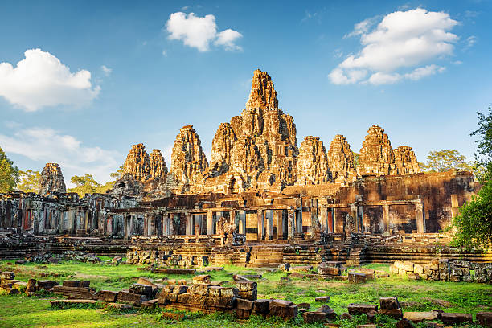
Bayon Temple
Bayon Temple is a stunning Khmer monument located in the heart of Angkor Thom. Built in the late 12th century, it is famous for its massive stone faces carved on towering towers. The temple blends spirituality, symbolism, and intricate bas-reliefs depicting ancient life. Today, Bayon stands as one of Cambodia’s most iconic and visually unique temples.
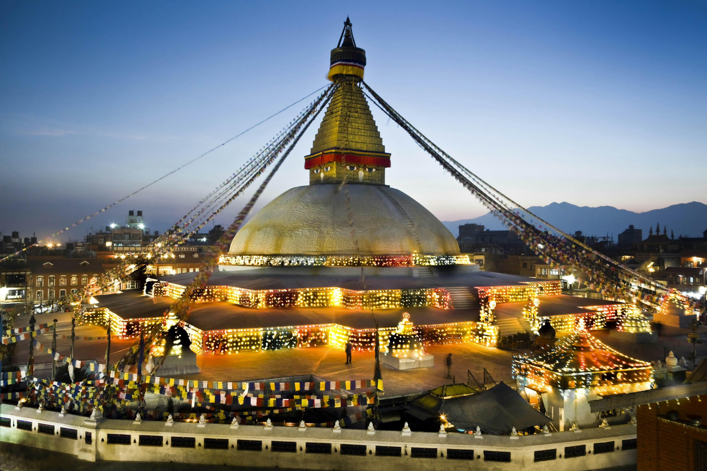
Boudhanath Stupa
Boudhanath Stupa is one of the largest and most sacred Buddhist stupas in Nepal. Built in the 14th century, it is a major center of Tibetan Buddhism. Its massive white dome and the all-seeing eyes of Buddha make it iconic. Today, it is a peaceful spiritual site visited by pilgrims from around the world.

Pashupatinath temple
Pashupatinath Temple is one of the holiest Hindu temples dedicated to Lord Shiva. Located on the banks of the Bagmati River, it dates back to ancient times. Its golden pagoda-style architecture and sacred rituals attract pilgrims year-round. Today, it stands as a UNESCO World Heritage Site and a spiritual heart of Kathmandu.
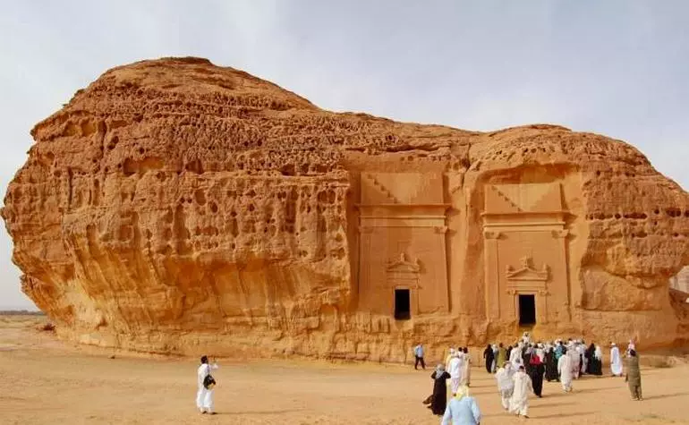
Mada’in Saleh (Al-Hijr)
Mada’in Saleh, also known as Al-Hijr, is Saudi Arabia’s first UNESCO World Heritage Site. It features over 100 ancient rock-cut tombs carved by the Nabataean civilization. The site is famous for its stunning sandstone cliffs and remarkably preserved facades. Today, it stands as one of the Middle East’s most important archaeological treasures.
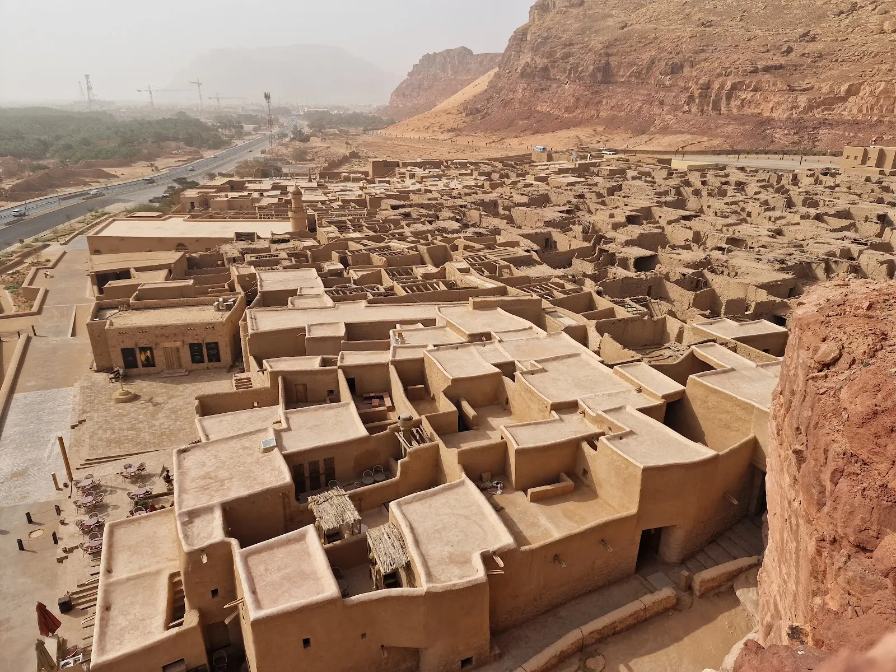
Al-Ula Old Town
Al-Ula Old Town is an ancient settlement made of mud-brick houses and narrow alleyways. It served as a key stop along historic trade routes crossing northwest Arabia. The town showcases traditional Arabian architecture and centuries-old heritage. Today, it is a restored cultural site that reflects the rich history of Al-Ula.
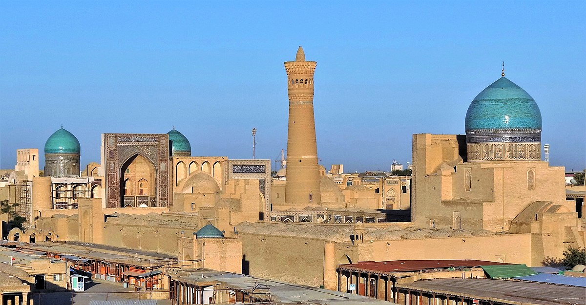
Bukhara Old City
Bukhara Old City is one of Central Asia’s best-preserved ancient settlements. It was a major stop on the Silk Road, known for its trade, culture, and learning. The city is filled with mosques, madrasas, bazaars, and centuries-old architecture. Today, it stands as a UNESCO World Heritage Site showcasing rich Islamic heritage.

Registan Square (Samarkand)
Registan Square is the historic heart of Samarkand and a masterpiece of Islamic architecture. It is framed by three grand madrasas decorated with intricate mosaics and blue tiles. Once a vital center of learning and culture on the Silk Road, it attracted scholars from across Asia. Today, it stands as one of Uzbekistan’s most iconic and breathtaking heritage sites.
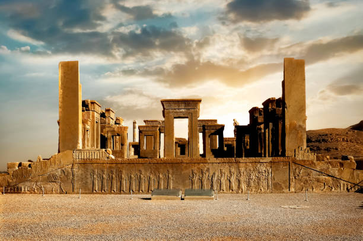
Persepolis
Persepolis was the capital of the ancient Achaemenid Empire. Founded by King Darius I in the 6th century BCE, it showcased Persia’s power and wealth. Its grand stone terraces, royal palaces, and detailed carvings reflect extraordinary craftsmanship. Today, it stands as one of Iran’s most important archaeological and UNESCO World Heritage sites.
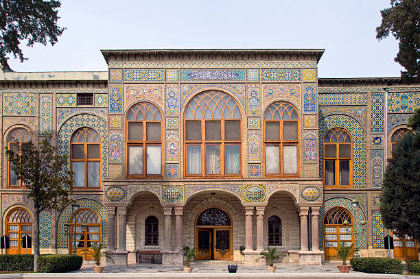
Golestan Palace
Golestan Palace is a stunning royal complex in Tehran and one of Iran’s oldest historic monuments. Built during the Qajar era, it blends Persian art with European architectural influences. Its mirrored halls, vibrant tiles, and elegant gardens highlight royal luxury. Today, it is a UNESCO World Heritage Site and a symbol of Iran’s cultural heritage.

Badshahi mosque
Badshahi Mosque is one of the largest and most iconic Mughal mosques in South Asia. Built by Emperor Aurangzeb in 1673, it reflects the grandeur of Mughal architecture. Its vast courtyard, red sandstone exterior, and white marble domes make it unforgettable. Today, it stands as a symbol of Lahore’s rich Islamic and cultural heritage.
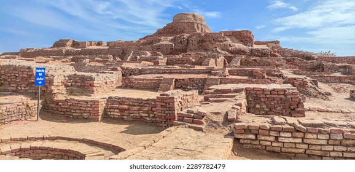
Mohenjo-Daro
Mohenjo-Daro is one of the oldest urban settlements of the ancient Indus Valley Civilization. Built around 2500 BCE, it features advanced city planning, drainage systems, and brick architecture. Its ruins reveal a sophisticated society known for trade, craftsmanship, and organized living. Today, it stands as a UNESCO World Heritage Site.
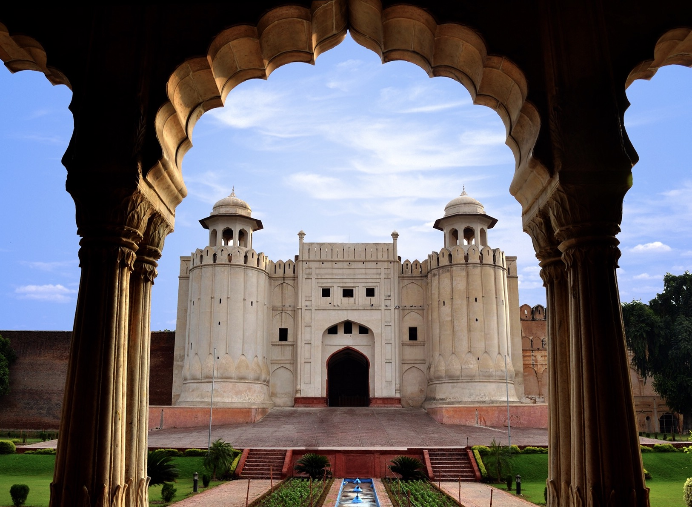
Lahore fort
Lahore Fort, also called Shahi Qila, is a majestic Mughal fortress located in the heart of Lahore. Originally built centuries ago, it was expanded by emperors like Akbar, Jahangir, and Shah Jahan. The fort is known for its grand gates, royal chambers, marble palaces, and stunning frescoes. It is the symbol of Pakistan’s rich Mughal heritage.
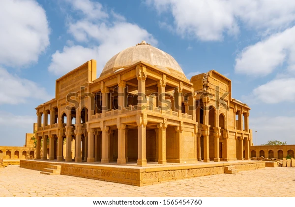
Makli Necropolis
Makli Necropolis, located near Thatta in Sindh, is one of the largest and oldest graveyards in the world, spreading across nearly 10 square kilometers. This UNESCO World Heritage Site contains over one million tombs, making it a vast city of the dead that reflects 400 years of rich South Asian history. Makli developed between the 14th and 18th centuries.
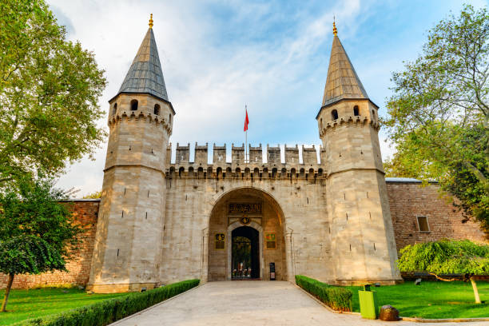
Topkapi palace
Topkapi Palace was the grand royal residence of the Ottoman sultans for nearly 400 years. Built in the 15th century, it overlooks the Bosphorus and showcases magnificent Ottoman architecture. Its courtyards, treasures, and sacred relics reflect the empire’s power and cultural richness. Today, it is a major museum and one of Istanbul’s most important historical landmarks.
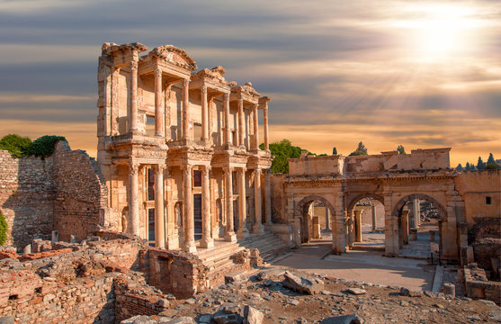
Ephesus Ancient City
Ephesus Ancient City is one of the best-preserved classical cities of the ancient world. Founded by the Greeks and later expanded by the Romans, it was a major center of trade and culture. Its highlights include the Library of Celsus, the Great Theatre, and ancient marble streets. Today, Ephesus stands as a UNESCO World and Roman Heritage Site.
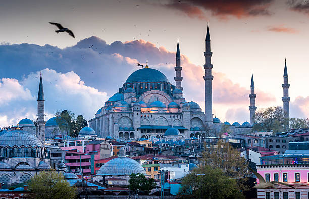
Blue mosque
The Blue Mosque, also known as the Sultan Ahmed Mosque, is one of Istanbul’s most iconic landmarks. Built in the early 17th century, it is famous for its stunning blue Iznik tiles. Its grand domes and six minarets showcase the height of Ottoman architecture. A masterpiece of beauty and spirituality, it remains a major symbol of Türkiye.
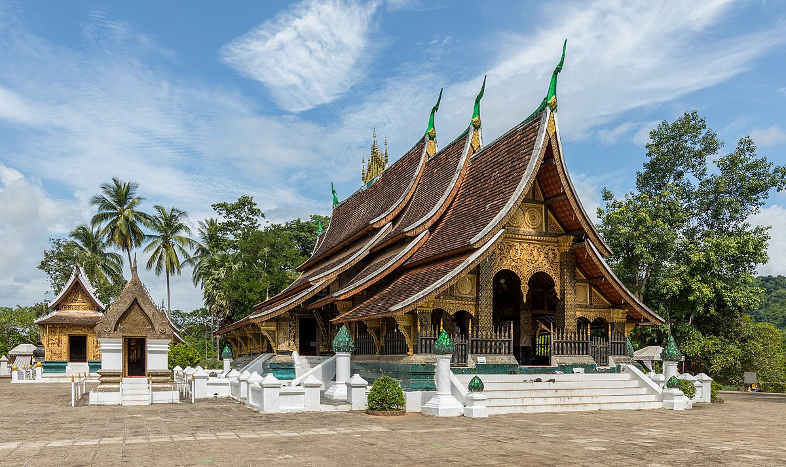
Wat Xieng Thong
Wat Xieng Thong is one of the most important Buddhist temples in Luang Prabang, Laos. Built in the 16th century, it showcases classic Lao temple architecture with sweeping roofs. The temple is decorated with beautiful gold motifs and intricate mosaics. It stands as a symbol of royal heritage, spirituality, and traditional Lao artistry.
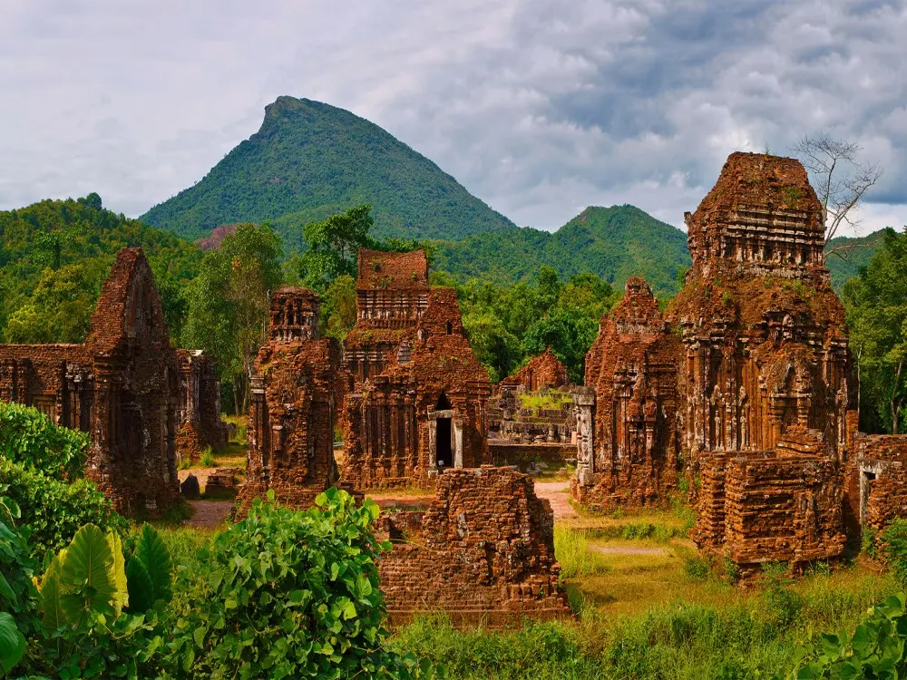
My Son Sanctuary
My Son Sanctuary is an ancient Hindu temple complex in central Vietnam. Built by the Champa Kingdom, it dates back over 1,000 years. The site features beautifully carved red-brick towers dedicated to Lord Shiva. Today, it stands as a UNESCO site showcasing Cham culture and architecture.
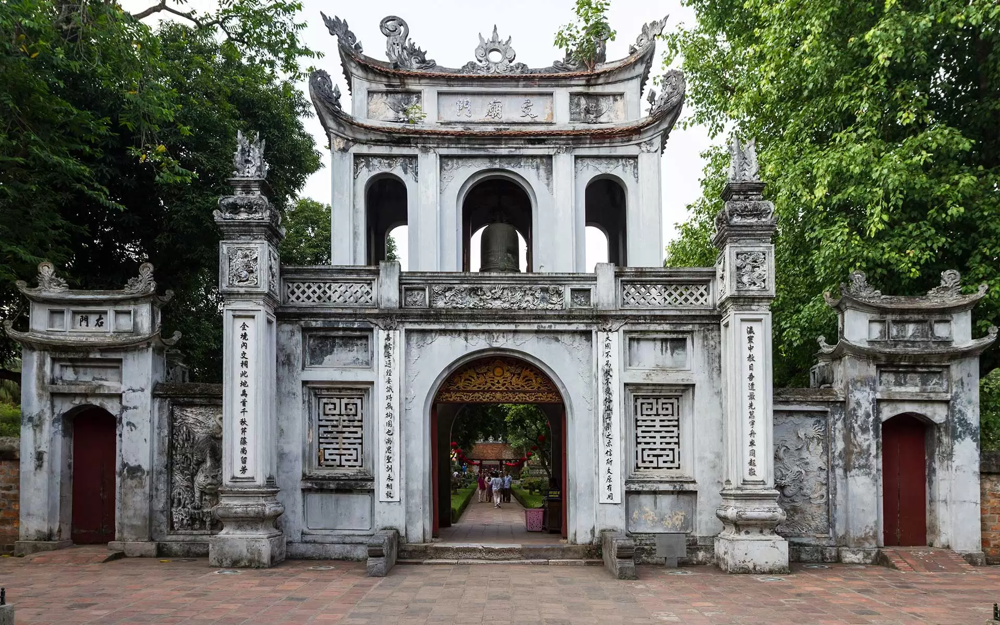
Temple of Literature
Temple of Literature, located in Hanoi, Vietnam, is the country’s first national university. Built in 1070, it honors Confucius and celebrates Vietnam’s scholarly traditions. The complex features tranquil courtyards, ancient pavilions, and stone turtle steles. It remains a symbol of education, wisdom, and Vietnam’s rich cultural heritage.
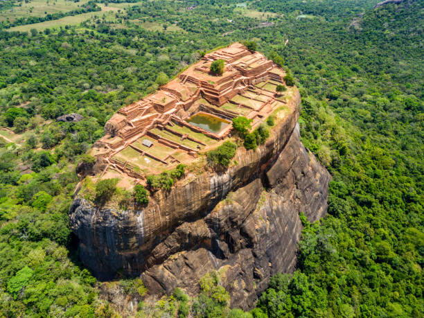
Sigiriya rock fortress
Sigiriya Rock Fortress, located in Sri Lanka, is an ancient royal citadel built atop a massive 200-meter rock. Created by King Kashyapa in the 5th century, it features stunning frescoes, water gardens, and massive lion-shaped gates. The site combines natural beauty with brilliant urban planning and engineering.

Temple of the tooth
Temple of the Tooth, located in Kandy, Sri Lanka, is one of Buddhism’s most sacred sites. It houses the revered Sacred Tooth Relic of Lord Buddha. The temple features elegant Kandyan architecture and rich cultural traditions. It is a major pilgrimage destination and a symbol of Sri Lanka’s spiritual heritage.